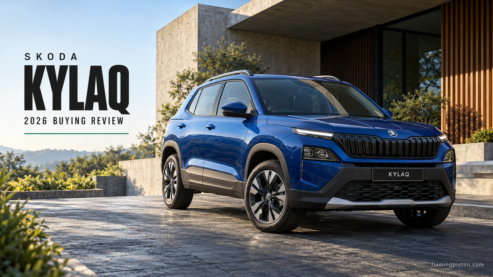

Skoda Kylaq Review 2026: Price, Automatic and Practicality

AI editorial illustration: FlamingPiston.
Desk-researched editorial review, checked 23 October 2026. FlamingPiston has not road-tested this vehicle for this article. Manufacturer claims and other publications’ driving findings are identified separately; the judgments and scores below are our editorial assessment.
The Kylaq has a simpler argument than most compact SUVs: one turbo-petrol engine, two gearboxes and a useful boot. It is appealing because the mechanical package makes sense, not because every square inch of the dashboard has been filled with a screen. The catch is that a small SUV still has to carry passengers comfortably. A strong engine specification cannot make the back seat wider or the ride softer.
Quick Verdict
The Kylaq is a persuasive choice for a small household that values its turbo-petrol package and conventional automatic. Published rear-seat and ride criticisms keep it from being the obvious comfort winner. Choose it for the balance it offers, with realistic expectations about city fuel use.
1
Price & Variants
From ₹7.59 lakh**Ex-showroom, India. Price basis and limitations below.
| Variant / choice | Configuration / basis | Price reference |
|---|---|---|
| Classic | Manual only | From ₹7,59,000 |
| Classic+ and above | Automatic available | Variant-specific quotation |
| Signature / Signature+ | Middle of the range | Variant-specific quotation |
| Prestige / Prestige+ | Higher equipment levels | Variant-specific quotation |
Best Value Pick
Start with Signature automatic, then compare its equipment against Classic+ and Signature+. It is our provisional value pick because the automatic is the useful upgrade for daily traffic; a higher badge is secondary. We have verified the range entry rather than a complete current price matrix, so this is a specification recommendation, not a claim that the price gap between those trims is fixed.
2
Exterior Design
The Kylaq's restrained outline is one of its stronger decisions. It looks like a small SUV without requiring an oversized face to sell the idea. Our preference is for that tidy approach: it is easier to live with visually than a design built around a single fashionable detail.
Its compact positioning is also central to the purchase. Buyers wanting a bigger-car presence can spend more elsewhere, but that does not automatically buy something easier to park or more appropriate for a two-person commute.
3
Interior Design & Comfort
The cabin's practical argument starts with Skoda's quoted 446-litre boot. That is a useful published number, not our luggage test, and it should not be mistaken for proof of generous space in every seat.
Autocar India's first drive identified rear-seat comfort and refinement as areas needing improvement. It also found the suspension setup engaging rather than especially forgiving. Our comfort score reflects those published reservations. The Kylaq makes more sense for a couple with occasional rear passengers than for someone prioritising rear-seat luxury on every trip.
4
Features & Practicality
Available equipment includes powered and ventilated front seats and rear air vents, depending on version. Ventilation can be worthwhile in hot weather, but it should be priced as a comfort upgrade rather than a reason to ignore the rest of the cabin.
The same principle applies to the large boot claim. A useful car combines luggage space, passenger accommodation and everyday controls. The Kylaq is convincing on paper in the first area; the published ride and rear-seat reservations stop us treating the complete package as class-leading.
| Specification | Published information |
|---|---|
| Official starting price | ₹7,59,000 |
| Engine | 1.0 TSI petrol; 85 kW; 178 Nm |
| Transmissions | Six-speed manual or six-speed torque-converter automatic |
| Quoted boot capacity | 446 litres |
5
Performance & Mileage Potential
The 1.0 TSI produces 85 kW and 178 Nm. Buyers can choose a six-speed manual or a six-speed torque-converter automatic. That is a clear mechanical proposition, and the automatic is our preferred daily-use starting point. It removes clutch work without needing the buyer to chase a different engine.
Autocar's first drive praised agility and grip while wanting more refinement. Its later mileage listings report 10.6 km/l city and 15.12 highway for the manual, versus 8.7 and 13.36 for the automatic. These are Autocar test results, not ours, and individual usage will differ.
The reported results sit well below the listed claims of 19.68 km/l manual and 19.05 automatic. That gap is the reason for our restrained mileage score. The Kylaq can be an enjoyable compact SUV without being the cheapest city commuter to fuel.
6
Tech & Safety Deep-Dive
Bharat NCAP's Kylaq assessment identifies the Prestige manual as the tested vehicle. Published protection scores are 30.88/32 for adults and 45/49 for children, supporting five-star ratings within the listed applicability. Skoda also lists six airbags.
The crash result is a substantive reason to take the car seriously. It does not erase the cabin compromises, but it contributes more to the recommendation than a cosmetic trim pack. Our safety score recognises published protection evidence separately from the subjective comfort judgment.
How We Scored This
Using our Review Methodology, we assess the following eight criteria.
Each of the eight criteria carries equal weight. These are FlamingPiston editorial scores, not manufacturer ratings or the scores assigned by the publications consulted. The final average is rounded to one decimal place.
| Criteria | Score |
|---|---|
| Design | 8.0 / 10 |
| Performance | 8.0 / 10 |
| Mileage Potential | 6.5 / 10 |
| Comfort | 7.0 / 10 |
| Features | 7.5 / 10 |
| Safety | 9.0 / 10 |
| Practicality | 8.0 / 10 |
| Value for Money | 8.0 / 10 |
| Octane Score (average) | 7.8 / 10 |
Why These Scores
Design: Restrained, coherent compact-SUV design.
Performance: Useful turbo output and published handling strengths.
Mileage Potential: Independent city consumption reports temper the claims.
Comfort: Published rear-seat, ride and refinement reservations.
Features: Useful comfort features, restricted by trim.
Safety: Published Bharat NCAP results and six airbags.
Practicality: Strong quoted boot capacity; rear accommodation less convincing.
Value for Money: Compelling entry and mechanical package; exact trim quote still matters.
7
Verdict
Flaming Piston's Take
The Kylaq is strongest as a compact turbo-petrol SUV for buyers who put the engine, gearbox and safety case ahead of rear-seat indulgence. Signature automatic is where we would begin. Move up for equipment you will use, and budget with realistic fuel consumption. It is a good fit for the right household; it does not need to be called the best at everything to earn that recommendation.
Who Should Buy This
- Small households wanting a turbo-petrol compact SUV and torque-converter automatic.
- Buyers placing weight on published crash-test performance.
Who Should Avoid This
- Rear-seat-first buyers seeking a particularly soft ride.
- Heavy city users expecting certification mileage in traffic.
FAQs
Does the cheapest Kylaq have an automatic gearbox?
No. The official page lists Classic as manual-only and automatic availability from Classic+ upwards.
What type of automatic does it use?
Skoda identifies it as a six-speed torque-converter automatic.
Is 446 litres our measured boot result?
No. It is the manufacturer’s published capacity.
Related Reading
Sources: Skoda Auto India; Bharat NCAP; Autocar India. Checked 23 October 2026. Publication findings are attributed in the text; specifications and availability depend on variant.
Back to reviews